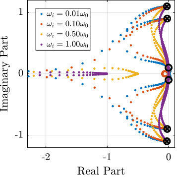
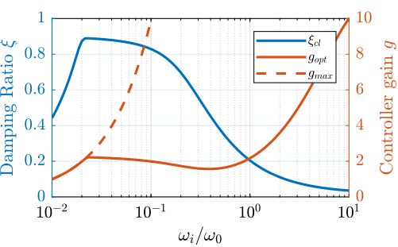
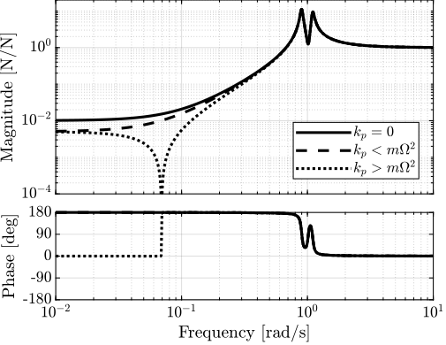
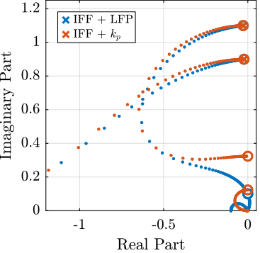
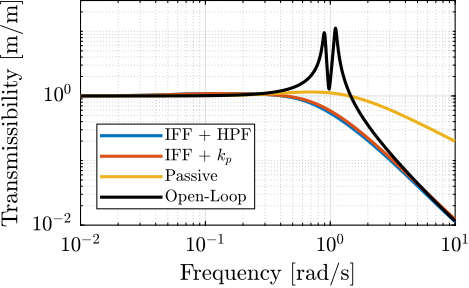

Matlab Computation
Table of Contents
- 1. System Description and Analysis
- 2. Problem with pure Integral Force Feedback
- 3. Integral Force Feedback with an High Pass Filter
- 4. IFF with a stiffness in parallel with the force sensor
- 4.1. Schematic
- 4.2. Equations
- 4.3. Physical Explanation
- 4.4. Plant Parameters
- 4.5. Comparison of the Analytical Model and the Simscape Model
- 4.6. Effect of the parallel stiffness on the IFF plant
- 4.7. IFF when adding a spring in parallel
- 4.8. Effect of \(k_p\) on the attainable damping
- 4.9. Optimal Gain
- 5. Comparison
- 6. Notations
1 System Description and Analysis
1.1 System description
The system consists of one 2 degree of freedom translation stage on top of a spindle (figure 1).

Figure 1: Schematic of the studied system
The control inputs are the forces applied by the actuators of the translation stage (\(F_u\) and \(F_v\)). As the translation stage is rotating around the Z axis due to the spindle, the forces are applied along \(\vec{i}_u\) and \(\vec{i}_v\).
The measurement is either the \(x-y\) displacement of the object located on top of the translation stage or the \(u-v\) displacement of the sample with respect to a fixed reference frame.
1.2 Equations
Based on the Figure 1, the equations of motions are:
Where \(\bm{G}_d\) is a \(2 \times 2\) transfer function matrix.
\begin{equation} \bm{G}_d = \frac{1}{k} \frac{1}{G_{dp}} \begin{bmatrix} G_{dz} & G_{dc} \\ -G_{dc} & G_{dz} \end{bmatrix} \end{equation}With:
\begin{align} G_{dp} &= \left( \frac{s^2}{{\omega_0}^2} + 2 \xi \frac{s}{\omega_0} + 1 - \frac{{\Omega}^2}{{\omega_0}^2} \right)^2 + \left( 2 \frac{\Omega}{\omega_0} \frac{s}{\omega_0} \right)^2 \\ G_{dz} &= \frac{s^2}{{\omega_0}^2} + 2 \xi \frac{s}{\omega_0} + 1 - \frac{{\Omega}^2}{{\omega_0}^2} \\ G_{dc} &= 2 \frac{\Omega}{\omega_0} \frac{s}{\omega_0} \end{align}Explain Coriolis and Centrifugal Forces (negative Stiffness) => First write the equations in terms of \(k\), \(m\) and \(c\) and explain the terms.
1.3 Numerical Values
Let’s define initial values for the model.
k = 1; % Actuator Stiffness [N/m] c = 0.05; % Actuator Damping [N/(m/s)] m = 1; % Payload mass [kg]
xi = c/(2*sqrt(k*m)); w0 = sqrt(k/m); % [rad/s]
1.4 Campbell Diagram
The Campbell Diagram displays the evolution of the real and imaginary parts of the system as a function of the rotating speed.
It is shown in Figure 2, and one can see that the system becomes unstable for \(\Omega > \omega_0\) (the real part of one of the poles becomes positive).

Figure 2: Campbell Diagram
1.5 Simscape Model
Define the rotating speed for the Simscape Model.
W = 0.1; % Rotation Speed [rad/s]
open('rotating_frame.slx');
The transfer function from \([F_u, F_v]\) to \([d_u, d_v]\) is identified from the Simscape model.
%% Name of the Simulink File mdl = 'rotating_frame'; %% Input/Output definition clear io; io_i = 1; io(io_i) = linio([mdl, '/K'], 1, 'openinput'); io_i = io_i + 1; io(io_i) = linio([mdl, '/G'], 3, 'openoutput'); io_i = io_i + 1;
G = linearize(mdl, io, 0);
%% Input/Output definition
G.InputName = {'Fu', 'Fv'};
G.OutputName = {'du', 'dv'};
The same transfer function from \([F_u, F_v]\) to \([d_u, d_v]\) is written down from the analytical model.
Gth = (1/k)/(((s^2)/(w0^2) + 2*xi*s/w0 + 1 - (W^2)/(w0^2))^2 + (2*W*s/(w0^2))^2) * ...
[(s^2)/(w0^2) + 2*xi*s/w0 + 1 - (W^2)/(w0^2), 2*W*s/(w0^2) ; ...
-2*W*s/(w0^2), (s^2)/(w0^2) + 2*xi*s/w0 + 1 - (W^2)/(w0^2)];
Both transfer functions are compared in Figure 3 and are found to perfectly match.

Figure 3: Bode plot of the transfer function from \([F_u, F_v]\) to \([d_u, d_v]\) as identified from the Simscape model and from an analytical model
1.6 Effect of the rotation speed
The transfer functions from \([F_u, F_v]\) to \([d_u, d_v]\) are identified for the following rotating speeds.
Ws = [0, 0.2, 0.7, 1.1]*w0; % Rotating Speeds [rad/s]
Gs = {zeros(2, 2, length(Ws))};
for W_i = 1:length(Ws)
W = Ws(W_i);
Gs(:, :, W_i) = {(1/k)/(((s^2)/(w0^2) + 2*xi*s/w0 + 1 - (W^2)/(w0^2))^2 + (2*W*s/(w0^2))^2) * ...
[(s^2)/(w0^2) + 2*xi*s/w0 + 1 - (W^2)/(w0^2), 2*W*s/(w0^2) ; ...
-2*W*s/(w0^2), (s^2)/(w0^2) + 2*xi*s/w0 + 1 - (W^2)/(w0^2)]};
end
They are compared in Figure 4.

Figure 4: Comparison of the transfer functions from \([F_u, F_v]\) to \([d_u, d_v]\) for several rotating speed
2 Problem with pure Integral Force Feedback
2.1 Schematic
2.2 Plant Parameters
Let’s define initial values for the model.
k = 1; % Actuator Stiffness [N/m] c = 0.05; % Actuator Damping [N/(m/s)] m = 1; % Payload mass [kg]
xi = c/(2*sqrt(k*m)); w0 = sqrt(k/m); % [rad/s]
2.3 Equations
The sensed forces are equal to:
\begin{equation} \begin{bmatrix} f_{u} \\ f_{v} \end{bmatrix} = \begin{bmatrix} 1 & 0 \\ 0 & 1 \end{bmatrix} \begin{bmatrix} F_u \\ F_v \end{bmatrix} - (c s + k) \begin{bmatrix} d_u \\ d_v \end{bmatrix} \end{equation}Which then gives:
2.4 Comparison of the Analytical Model and the Simscape Model
The rotation speed is set to \(\Omega = 0.1 \omega_0\).
W = 0.1*w0; % [rad/s]
open('rotating_frame.slx');
And the transfer function from \([F_u, F_v]\) to \([f_u, f_v]\) is identified using the Simscape model.
%% Name of the Simulink File mdl = 'rotating_frame'; %% Input/Output definition clear io; io_i = 1; io(io_i) = linio([mdl, '/K'], 1, 'openinput'); io_i = io_i + 1; io(io_i) = linio([mdl, '/G'], 2, 'openoutput'); io_i = io_i + 1;
Giff = linearize(mdl, io, 0);
%% Input/Output definition
Giff.InputName = {'Fu', 'Fv'};
Giff.OutputName = {'fu', 'fv'};
The same transfer function from \([F_u, F_v]\) to \([f_u, f_v]\) is written down from the analytical model.
Giff_th = 1/(((s^2)/(w0^2) + 2*xi*s/w0 + 1 - (W^2)/(w0^2))^2 + (2*W*s/(w0^2))^2) * ...
[(s^2/w0^2 - W^2/w0^2)*((s^2)/(w0^2) + 2*xi*s/w0 + 1 - (W^2)/(w0^2)) + (2*W*s/(w0^2))^2, - (2*xi*s/w0 + 1)*2*W*s/(w0^2) ; ...
(2*xi*s/w0 + 1)*2*W*s/(w0^2), (s^2/w0^2 - W^2/w0^2)*((s^2)/(w0^2) + 2*xi*s/w0 + 1 - (W^2)/(w0^2))+ (2*W*s/(w0^2))^2];
The two are compared in Figure 5 and found to perfectly match.
Figure 5: Comparison of the transfer functions from \([F_u, F_v]\) to \([f_u, f_v]\) between the Simscape model and the analytical one
2.5 Effect of the rotation speed
The transfer functions from \([F_u, F_v]\) to \([f_u, f_v]\) are identified for the following rotating speeds.
Ws = [0, 0.2, 0.7, 1.1]*w0; % Rotating Speeds [rad/s]
Gsiff = {zeros(2, 2, length(Ws))};
for W_i = 1:length(Ws)
W = Ws(W_i);
Gsiff(:, :, W_i) = {1/(((s^2)/(w0^2) + 2*xi*s/w0 + 1 - (W^2)/(w0^2))^2 + (2*W*s/(w0^2))^2) * ...
[(s^2/w0^2 - W^2/w0^2)*((s^2)/(w0^2) + 2*xi*s/w0 + 1 - (W^2)/(w0^2)) + (2*W*s/(w0^2))^2, - (2*xi*s/w0 + 1)*2*W*s/(w0^2) ; ...
(2*xi*s/w0 + 1)*2*W*s/(w0^2), (s^2/w0^2 - W^2/w0^2)*((s^2)/(w0^2) + 2*xi*s/w0 + 1 - (W^2)/(w0^2))+ (2*W*s/(w0^2))^2]};
end
The obtained transfer functions are shown in Figure 6.

Figure 6: Comparison of the transfer functions from \([F_u, F_v]\) to \([f_u, f_v]\) for several rotating speed
2.6 Decentralized Integral Force Feedback
The decentralized IFF controller consists of pure integrators:
\begin{equation} \bm{K}_{\text{IFF}}(s) = \frac{g}{s} \begin{bmatrix} 1 & 0 \\ 0 & 1 \end{bmatrix} \end{equation}The Root Locus (evolution of the poles of the closed loop system in the complex plane as a function of \(g\)) is shown in Figure 7. It is shown that for non-null rotating speed, one pole is bound to the right-half plane, and thus the closed loop system is unstable.

Figure 7: Root Locus for the Decentralized Integral Force Feedback controller. Several rotating speed are shown.
3 Integral Force Feedback with an High Pass Filter
3.1 Plant Parameters
Let’s define initial values for the model.
k = 1; % Actuator Stiffness [N/m] c = 0.05; % Actuator Damping [N/(m/s)] m = 1; % Payload mass [kg]
xi = c/(2*sqrt(k*m)); w0 = sqrt(k/m); % [rad/s]
3.2 Modified Integral Force Feedback Controller
Let’s modify the initial Integral Force Feedback Controller ; instead of using pure integrators, pseudo integrators (i.e. low pass filters) are used:
\begin{equation} K_{\text{IFF}}(s) = g\frac{1}{\omega_i + s} \begin{bmatrix} 1 & 0 \\ 0 & 1 \end{bmatrix} \end{equation}where \(\omega_i\) characterize down to which frequency the signal is integrated.
Let’s arbitrary choose the following control parameters:
g = 2; wi = 0.1*w0;
And the following rotating speed.
Giff = 1/(((s^2)/(w0^2) + 2*xi*s/w0 + 1 - (W^2)/(w0^2))^2 + (2*W*s/(w0^2))^2) * ...
[(s^2/w0^2 - W^2/w0^2)*((s^2)/(w0^2) + 2*xi*s/w0 + 1 - (W^2)/(w0^2)) + (2*W*s/(w0^2))^2, - (2*xi*s/w0 + 1)*2*W*s/(w0^2) ; ...
(2*xi*s/w0 + 1)*2*W*s/(w0^2), (s^2/w0^2 - W^2/w0^2)*((s^2)/(w0^2) + 2*xi*s/w0 + 1 - (W^2)/(w0^2))+ (2*W*s/(w0^2))^2];
The obtained Loop Gain is shown in Figure 8.

Figure 8: Loop Gain for the modified IFF controller
3.3 Root Locus
As shown in the Root Locus plot (Figure 9), for some value of the gain, the system remains stable.

Figure 9: Root Locus for the modified IFF controller
3.4 What is the optimal \(\omega_i\) and \(g\)?
In order to visualize the effect of \(\omega_i\) on the attainable damping, the Root Locus is displayed in Figure 10 for the following \(\omega_i\):
wis = [0.01, 0.1, 0.5, 1]*w0; % [rad/s]

Figure 10: Root Locus for the modified IFF controller (zoomed plot on the left)
For the controller
\begin{equation} K_{\text{IFF}}(s) = g\frac{1}{\omega_i + s} \begin{bmatrix} 1 & 0 \\ 0 & 1 \end{bmatrix} \end{equation}The gain at which the system becomes unstable is
\begin{equation} g_\text{max} = \omega_i \left( \frac{{\omega_0}^2}{\Omega^2} - 1 \right) \label{eq:iff_gmax} \end{equation}While it seems that small \(\omega_i\) do allow more damping to be added to the system (Figure 10), the control gains may be limited to small values due to \eqref{eq:iff_gmax} thus reducing the attainable damping.
There must be an optimum for \(\omega_i\). To find the optimum, the gain that maximize the simultaneous damping of the mode is identified for a wide range of \(\omega_i\) (Figure 11).
wis = logspace(-2, 1, 100)*w0; % [rad/s]
opt_zeta = zeros(1, length(wis)); % Optimal simultaneous damping
opt_gain = zeros(1, length(wis)); % Corresponding optimal gain
for wi_i = 1:length(wis)
wi = wis(wi_i);
Kiff = 1/(s + wi)*eye(2);
fun = @(g)computeSimultaneousDamping(g, Giff, Kiff);
[g_opt, xi_opt] = fminsearch(fun, 0.5*wi*((w0/W)^2 - 1));
opt_zeta(wi_i) = 1/xi_opt;
opt_gain(wi_i) = g_opt;
end

Figure 11: Simultaneous attainable damping of the closed loop poles as a function of \(\omega_i\)
4 IFF with a stiffness in parallel with the force sensor
4.1 Schematic

Figure 12: Figure caption
4.2 Equations
With:
\begin{align} G_{kp} &= \left( \frac{s^2}{{\omega_0^\prime}^2} + 2\xi^\prime \frac{s}{{\omega_0^\prime}^2} + 1 - \frac{\Omega^2}{{\omega_0^\prime}^2} \right)^2 + \left( 2 \frac{\Omega}{\omega_0^\prime}\frac{s}{\omega_0^\prime} \right)^2 \\ G_{kz} &= \left( \frac{s^2}{{\omega_0^\prime}^2} + \frac{k_p}{k + k_p} - \frac{\Omega^2}{{\omega_0^\prime}^2} \right) \left( \frac{s^2}{{\omega_0^\prime}^2} + 2\xi^\prime \frac{s}{{\omega_0^\prime}^2} + 1 - \frac{\Omega^2}{{\omega_0^\prime}^2} \right) + \left( 2 \frac{\Omega}{\omega_0^\prime}\frac{s}{\omega_0^\prime} \right)^2 \\ G_{kc} &= \left( 2 \xi^\prime \frac{s}{\omega_0^\prime} + \frac{k}{k + k_p} \right) \left( 2 \frac{\Omega}{\omega_0^\prime}\frac{s}{\omega_0^\prime} \right) \end{align}where:
- \(\omega_0^\prime = \frac{k + k_p}{m}\)
- \(\xi^\prime = \frac{c}{2 \sqrt{(k + k_p) m}}\)
If we compare \(G_{kz}\) and \(G_{fz}\), we see that the spring in parallel adds a term \(\frac{k_p}{k + k_p}\). In order to have two complex conjugate zeros (instead of real zeros):
\begin{equation} \frac{k_p}{k + k_p} - \frac{\Omega^2}{{\omega_0^\prime}^2} > 0 \end{equation}Which is equivalent to
\begin{equation} k_p > m \Omega^2 \end{equation}4.3 Physical Explanation
- Negative stiffness induced by gyroscopic effects
- Zeros of the open-loop <=> Poles of the subsystem with the force sensors removes
- As the zeros are the poles of the closed loop system for high gains, we want them to be in the left-half plane
- Thus we want the zeros to be in the left half plant and thus the system with the force sensors stable
- This can be done by adding springs in parallel with the force sensors with a stiffness larger than the virtual negative stiffness added by the gyroscopic effects
The negative stiffness induced by the rotation is:
\begin{equation} k_{n} = - m \Omega^2 \end{equation}And thus, the stiffness in parallel should be such that:
\begin{equation} k_{p} > m \Omega^2 \end{equation}4.4 Plant Parameters
Let’s define initial values for the model.
k = 1; % Actuator Stiffness [N/m] c = 0.05; % Actuator Damping [N/(m/s)] m = 1; % Payload mass [kg]
xi = c/(2*sqrt(k*m)); w0 = sqrt(k/m); % [rad/s]
4.5 Comparison of the Analytical Model and the Simscape Model
The same transfer function from \([F_u, F_v]\) to \([f_u, f_v]\) is written down from the analytical model.
W = 0.1*w0; % [rad/s] kp = 1.5*m*W^2; cp = 0;
open('rotating_frame.slx');
%% Name of the Simulink File
mdl = 'rotating_frame';
%% Input/Output definition
clear io; io_i = 1;
io(io_i) = linio([mdl, '/K'], 1, 'openinput'); io_i = io_i + 1;
io(io_i) = linio([mdl, '/G'], 2, 'openoutput'); io_i = io_i + 1;
Giff = linearize(mdl, io, 0);
%% Input/Output definition
Giff.InputName = {'Fu', 'Fv'};
Giff.OutputName = {'fu', 'fv'};
w0p = sqrt((k + kp)/m);
xip = c/(2*sqrt((k+kp)*m));
Giff_th = 1/( (s^2/w0p^2 + 2*xip*s/w0p + 1 - W^2/w0p^2)^2 + (2*(s/w0p)*(W/w0p))^2 ) * [ ...
(s^2/w0p^2 + kp/(k + kp) - W^2/w0p^2)*(s^2/w0p^2 + 2*xip*s/w0p + 1 - W^2/w0p^2) + (2*(s/w0p)*(W/w0p))^2, -(2*xip*s/w0p + k/(k + kp))*(2*(s/w0p)*(W/w0p));
(2*xip*s/w0p + k/(k + kp))*(2*(s/w0p)*(W/w0p)), (s^2/w0p^2 + kp/(k + kp) - W^2/w0p^2)*(s^2/w0p^2 + 2*xip*s/w0p + 1 - W^2/w0p^2) + (2*(s/w0p)*(W/w0p))^2 ];
Giff_th.InputName = {'Fu', 'Fv'};
Giff_th.OutputName = {'fu', 'fv'};

Figure 13: Comparison of the transfer functions from \([F_u, F_v]\) to \([f_u, f_v]\) between the Simscape model and the analytical one
4.6 Effect of the parallel stiffness on the IFF plant
The rotation speed is set to \(\Omega = 0.1 \omega_0\).
W = 0.1*w0; % [rad/s]
And the IFF plant (transfer function from \([F_u, F_v]\) to \([f_u, f_v]\)) is identified in three different cases:
- without parallel stiffness
- with a small parallel stiffness \(k_p < m \Omega^2\)
- with a large parallel stiffness \(k_p > m \Omega^2\)
The results are shown in Figure 14.
One can see that for \(k_p > m \Omega^2\), the systems shows alternating complex conjugate poles and zeros.
kp = 0;
w0p = sqrt((k + kp)/m);
xip = c/(2*sqrt((k+kp)*m));
Giff = 1/( (s^2/w0p^2 + 2*xip*s/w0p + 1 - W^2/w0p^2)^2 + (2*(s/w0p)*(W/w0p))^2 ) * [ ...
(s^2/w0p^2 + kp/(k + kp) - W^2/w0p^2)*(s^2/w0p^2 + 2*xip*s/w0p + 1 - W^2/w0p^2) + (2*(s/w0p)*(W/w0p))^2, -(2*xip*s/w0p + k/(k + kp))*(2*(s/w0p)*(W/w0p));
(2*xip*s/w0p + k/(k + kp))*(2*(s/w0p)*(W/w0p)), (s^2/w0p^2 + kp/(k + kp) - W^2/w0p^2)*(s^2/w0p^2 + 2*xip*s/w0p + 1 - W^2/w0p^2) + (2*(s/w0p)*(W/w0p))^2];
kp = 0.5*m*W^2;
k = 1 - kp;
w0p = sqrt((k + kp)/m);
xip = c/(2*sqrt((k+kp)*m));
Giff_s = 1/( (s^2/w0p^2 + 2*xip*s/w0p + 1 - W^2/w0p^2)^2 + (2*(s/w0p)*(W/w0p))^2 ) * [ ...
(s^2/w0p^2 + kp/(k + kp) - W^2/w0p^2)*(s^2/w0p^2 + 2*xip*s/w0p + 1 - W^2/w0p^2) + (2*(s/w0p)*(W/w0p))^2, -(2*xip*s/w0p + k/(k + kp))*(2*(s/w0p)*(W/w0p));
(2*xip*s/w0p + k/(k + kp))*(2*(s/w0p)*(W/w0p)), (s^2/w0p^2 + kp/(k + kp) - W^2/w0p^2)*(s^2/w0p^2 + 2*xip*s/w0p + 1 - W^2/w0p^2) + (2*(s/w0p)*(W/w0p))^2];
kp = 1.5*m*W^2;
k = 1 - kp;
w0p = sqrt((k + kp)/m);
xip = c/(2*sqrt((k+kp)*m));
Giff_l = 1/( (s^2/w0p^2 + 2*xip*s/w0p + 1 - W^2/w0p^2)^2 + (2*(s/w0p)*(W/w0p))^2 ) * [ ...
(s^2/w0p^2 + kp/(k + kp) - W^2/w0p^2)*(s^2/w0p^2 + 2*xip*s/w0p + 1 - W^2/w0p^2) + (2*(s/w0p)*(W/w0p))^2, -(2*xip*s/w0p + k/(k + kp))*(2*(s/w0p)*(W/w0p));
(2*xip*s/w0p + k/(k + kp))*(2*(s/w0p)*(W/w0p)), (s^2/w0p^2 + kp/(k + kp) - W^2/w0p^2)*(s^2/w0p^2 + 2*xip*s/w0p + 1 - W^2/w0p^2) + (2*(s/w0p)*(W/w0p))^2];

Figure 14: Transfer function from \([F_u, F_v]\) to \([f_u, f_v]\) for \(k_p = 0\), \(k_p < m \Omega^2\) and \(k_p > m \Omega^2\)
4.7 IFF when adding a spring in parallel
In Figure 15 is displayed the Root Locus in the three considered cases with
\begin{equation} K_{\text{IFF}} = \frac{g}{s} \begin{bmatrix} 1 & 0 \\ 0 & 1 \end{bmatrix} \end{equation}One can see that for \(k_p > m \Omega^2\), the root locus stays in the left half of the complex plane and thus the control system is unconditionally stable.
Thus, decentralized IFF controller with pure integrators can be used if:
\begin{equation} k_{p} > m \Omega^2 \end{equation}
Figure 15: Root Locus
4.8 Effect of \(k_p\) on the attainable damping
However, having large values of \(k_p\) may:
- decrease the actuator force authority
- decrease the attainable damping
To study the second point, Root Locus plots for the following values of \(k_p\) are shown in Figure 16.
kps = [2, 20, 40]*m*W^2;
It is shown that large values of \(k_p\) decreases the attainable damping.

Figure 16: Root Locus plot
alphas = logspace(-2, 0, 100);
opt_zeta = zeros(1, length(alphas)); % Optimal simultaneous damping
opt_gain = zeros(1, length(alphas)); % Corresponding optimal gain
Kiff = 1/s*eye(2);
for alpha_i = 1:length(alphas)
kp = alphas(alpha_i);
k = 1 - alphas(alpha_i);
w0p = sqrt((k + kp)/m);
xip = c/(2*sqrt((k+kp)*m));
Giff = 1/( (s^2/w0p^2 + 2*xip*s/w0p + 1 - W^2/w0p^2)^2 + (2*(s/w0p)*(W/w0p))^2 ) * [ ...
(s^2/w0p^2 + kp/(k + kp) - W^2/w0p^2)*(s^2/w0p^2 + 2*xip*s/w0p + 1 - W^2/w0p^2) + (2*(s/w0p)*(W/w0p))^2, -(2*xip*s/w0p + k/(k + kp))*(2*(s/w0p)*(W/w0p));
(2*xip*s/w0p + k/(k + kp))*(2*(s/w0p)*(W/w0p)), (s^2/w0p^2 + kp/(k + kp) - W^2/w0p^2)*(s^2/w0p^2 + 2*xip*s/w0p + 1 - W^2/w0p^2) + (2*(s/w0p)*(W/w0p))^2];
fun = @(g)computeSimultaneousDamping(g, Giff, Kiff);
[g_opt, xi_opt] = fminsearch(fun, 2);
opt_zeta(alpha_i) = 1/xi_opt;
opt_gain(alpha_i) = g_opt;
end
4.9 Optimal Gain
Let’s take \(k_p = 5 m \Omega^2\) and find the optimal IFF control gain \(g\) such that maximum damping are added to the poles of the closed loop system.
kp = 5*m*W^2;
k = 1 - kp;
w0p = sqrt((k + kp)/m);
xip = c/(2*sqrt((k+kp)*m));
Giff = 1/( (s^2/w0p^2 + 2*xip*s/w0p + 1 - W^2/w0p^2)^2 + (2*(s/w0p)*(W/w0p))^2 ) * [ ...
(s^2/w0p^2 + kp/(k + kp) - W^2/w0p^2)*(s^2/w0p^2 + 2*xip*s/w0p + 1 - W^2/w0p^2) + (2*(s/w0p)*(W/w0p))^2, -(2*xip*s/w0p + k/(k + kp))*(2*(s/w0p)*(W/w0p));
(2*xip*s/w0p + k/(k + kp))*(2*(s/w0p)*(W/w0p)), (s^2/w0p^2 + kp/(k + kp) - W^2/w0p^2)*(s^2/w0p^2 + 2*xip*s/w0p + 1 - W^2/w0p^2) + (2*(s/w0p)*(W/w0p))^2 ];
opt_zeta = 0;
opt_gain = 0;
gains = logspace(-2, 4, 1000);
for g = gains
Kiff = (g/s)*eye(2);
[w, zeta] = damp(minreal(feedback(Giff, Kiff)));
if min(zeta) > opt_zeta && all(zeta > 0)
opt_zeta = min(zeta);
opt_gain = min(g);
end
end

Figure 18: Root Locus for \(k_p = 5 m \Omega^2\) and the poles corresponding to the identified optimal gain
5 Comparison
5.1 Plant Parameters
Let’s define initial values for the model.
k = 1; % Actuator Stiffness [N/m] c = 0.05; % Actuator Damping [N/(m/s)] m = 1; % Payload mass [kg]
xi = c/(2*sqrt(k*m)); w0 = sqrt(k/m); % [rad/s]
The rotating speed is set to \(\Omega = 0.1 \omega_0\).
W = 0.1*w0;
5.2 Root Locus
IFF with High Pass Filter
wi = 0.1*w0; % [rad/s]
Giff = 1/(((s^2)/(w0^2) + 2*xi*s/w0 + 1 - (W^2)/(w0^2))^2 + (2*W*s/(w0^2))^2) * ...
[(s^2/w0^2 - W^2/w0^2)*((s^2)/(w0^2) + 2*xi*s/w0 + 1 - (W^2)/(w0^2)) + (2*W*s/(w0^2))^2, - (2*xi*s/w0 + 1)*2*W*s/(w0^2) ; ...
(2*xi*s/w0 + 1)*2*W*s/(w0^2), (s^2/w0^2 - W^2/w0^2)*((s^2)/(w0^2) + 2*xi*s/w0 + 1 - (W^2)/(w0^2))+ (2*W*s/(w0^2))^2];
IFF With parallel Stiffness
kp = 5*m*W^2;
k = k - kp;
w0p = sqrt((k + kp)/m);
xip = c/(2*sqrt((k+kp)*m));
Giff_kp = 1/( (s^2/w0p^2 + 2*xip*s/w0p + 1 - W^2/w0p^2)^2 + (2*(s/w0p)*(W/w0p))^2 ) * [ ...
(s^2/w0p^2 + kp/(k + kp) - W^2/w0p^2)*(s^2/w0p^2 + 2*xip*s/w0p + 1 - W^2/w0p^2) + (2*(s/w0p)*(W/w0p))^2, -(2*xip*s/w0p + k/(k + kp))*(2*(s/w0p)*(W/w0p));
(2*xip*s/w0p + k/(k + kp))*(2*(s/w0p)*(W/w0p)), (s^2/w0p^2 + kp/(k + kp) - W^2/w0p^2)*(s^2/w0p^2 + 2*xip*s/w0p + 1 - W^2/w0p^2) + (2*(s/w0p)*(W/w0p))^2 ];
k = k + kp;

Figure 19: Root Locus plot - Comparison of IFF with additional high pass filter, IFF with additional parallel stiffness
5.3 Controllers - Optimal Gains
In order to compare to three considered Active Damping techniques, gains that yield maximum damping of all the modes are computed for each case.
The obtained damping ratio and control are shown below.
| Obtained \(\xi\) | Control Gain | |
|---|---|---|
| Modified IFF | 0.83 | 2.0 |
| IFF with \(k_p\) | 0.83 | 2.01 |
5.4 Passive Damping - Critical Damping
Critical Damping corresponds to to \(\xi = 1\), and thus:
\begin{equation} c_{\text{crit}} = 2 \sqrt{km} \end{equation}c_opt = 2*sqrt(k*m);
5.5 Transmissibility And Compliance
open('rotating_frame.slx');
%% Name of the Simulink File mdl = 'rotating_frame'; %% Input/Output definition clear io; io_i = 1; io(io_i) = linio([mdl, '/dw'], 1, 'input'); io_i = io_i + 1; io(io_i) = linio([mdl, '/fd'], 1, 'input'); io_i = io_i + 1; io(io_i) = linio([mdl, '/Meas'], 1, 'output'); io_i = io_i + 1;
G_ol = linearize(mdl, io, 0);
%% Input/Output definition
G_ol.InputName = {'Dwx', 'Dwy', 'Fdx', 'Fdy'};
G_ol.OutputName = {'Dx', 'Dy'};
5.5.1 Passive Damping
kp = 0; cp = 0;
c_old = c; c = c_opt;
G_pas = linearize(mdl, io, 0);
%% Input/Output definition
G_pas.InputName = {'Dwx', 'Dwy', 'Fdx', 'Fdy'};
G_pas.OutputName = {'Dx', 'Dy'};
c = c_old;
Kiff = opt_gain_iff/(wi + s)*tf(eye(2));
G_iff = linearize(mdl, io, 0);
%% Input/Output definition
G_iff.InputName = {'Dwx', 'Dwy', 'Fdx', 'Fdy'};
G_iff.OutputName = {'Dx', 'Dy'};
kp = 5*m*W^2; cp = 0.01;
Kiff = opt_gain_kp/s*tf(eye(2));
G_kp = linearize(mdl, io, 0);
%% Input/Output definition
G_kp.InputName = {'Dwx', 'Dwy', 'Fdx', 'Fdy'};
G_kp.OutputName = {'Dx', 'Dy'};

Figure 20: Comparison of the transmissibility
Figure 21: Comparison of the obtained Compliance
5.6 DC Compliance
wis = logspace(-2, 1, 100)*w0; % [rad/s]
opt_zeta_wi = zeros(1, length(wis)); % Optimal simultaneous damping
opt_gain_wi = zeros(1, length(wis)); % Corresponding optimal gain
C_dc_gain_wi = zeros(1, length(wis)); % Compliance DC value
for wi_i = 1:length(wis)
wi = wis(wi_i);
Kiff = 1/(s + wi)*eye(2);
fun = @(g)computeSimultaneousDamping(g, Gwi({'fu', 'fv'}, {'Fu', 'Fv'}), Kiff);
[g_opt, xi_opt] = fminsearch(fun, 0.5*wi*((w0/W)^2 - 1));
opt_zeta_wi(wi_i) = 1/xi_opt;
opt_gain_wi(wi_i) = g_opt;
G_dc_gain = dcgain(lft(Gwi, -g_opt/(s + wi)*eye(2), 2, 2));
C_dc_gain_wi(wi_i) = G_dc_gain(1,1);
end
alphas = logspace(-2, 0, 100);
opt_zeta_kp = zeros(1, length(alphas)); % Optimal simultaneous damping
opt_gain_kp = zeros(1, length(alphas)); % Corresponding optimal gain
C_dc_gain_kp = zeros(1, length(alphas)); % DC gain of the compliance
Kiff = 1/s*eye(2);
for alpha_i = 1:length(alphas)
kp = alphas(alpha_i);
k = 1 - alphas(alpha_i);
w0p = sqrt((k + kp)/m);
xip = c/(2*sqrt((k+kp)*m));
Gkp = tf(zeros(4,4));
Gkp.InputName = {'Fx', 'Fy', 'Fu', 'Fv'};
Gkp.OutputName = {'dx', 'dy', 'fu', 'fv'};
Gp = ((s^2)/(w0p^2) + 2*xip*s/w0p + 1 - (W^2)/(w0p^2))^2 + (2*W*s/(w0p^2))^2;
Gkp('dx', 'Fu') = (1/(k + kp))*((s^2)/(w0p^2) + 2*xip*s/w0p + 1 - (W^2)/(w0p^2))/Gp;
Gkp('dy', 'Fv') = (1/(k + kp))*((s^2)/(w0p^2) + 2*xip*s/w0p + 1 - (W^2)/(w0p^2))/Gp;
Gkp('dx', 'Fx') = (1/(k + kp))*((s^2)/(w0p^2) + 2*xip*s/w0p + 1 - (W^2)/(w0p^2))/Gp;
Gkp('dy', 'Fy') = (1/(k + kp))*((s^2)/(w0p^2) + 2*xip*s/w0p + 1 - (W^2)/(w0p^2))/Gp;
Gkp('dx', 'Fv') = (1/(k + kp))*(2*W*s/(w0p^2))/Gp;
Gkp('dy', 'Fu') = -(1/(k + kp))*(2*W*s/(w0p^2))/Gp;
Gkp('dx', 'Fy') = (1/(k + kp))*(2*W*s/(w0p^2))/Gp;
Gkp('dy', 'Fx') = -(1/(k + kp))*(2*W*s/(w0p^2))/Gp;
Gkp('fu', 'Fu') = ((s^2/w0p^2 + kp/(k + kp) - W^2/w0p^2)*(s^2/w0p^2 + 2*xip*s/w0p + 1 - W^2/w0p^2) + (2*(s/w0p)*(W/w0p))^2)/Gp;
Gkp('fv', 'Fv') = ((s^2/w0p^2 + kp/(k + kp) - W^2/w0p^2)*(s^2/w0p^2 + 2*xip*s/w0p + 1 - W^2/w0p^2) + (2*(s/w0p)*(W/w0p))^2)/Gp;
Gkp('fu', 'Fv') = -(2*xip*s/w0p + k/(k + kp))*(2*(s/w0p)*(W/w0p))/Gp;
Gkp('fv', 'Fu') = (2*xip*s/w0p + k/(k + kp))*(2*(s/w0p)*(W/w0p))/Gp;
Gkp('fu', 'Fx') = -(c*s + k)*(1/(k + kp))*((s^2)/(w0p^2) + 2*xip*s/w0p + 1 - (W^2)/(w0p^2))/Gp;
Gkp('fv', 'Fy') = -(c*s + k)*(1/(k + kp))*((s^2)/(w0p^2) + 2*xip*s/w0p + 1 - (W^2)/(w0p^2))/Gp;
Gkp('fu', 'Fy') = -(c*s + k)*(1/(k + kp))*(2*W*s/(w0p^2))/Gp;
Gkp('fv', 'Fx') = (c*s + k)*(1/(k + kp))*(2*W*s/(w0p^2))/Gp;
fun = @(g)computeSimultaneousDamping(g, Gkp({'fu', 'fv'}, {'Fu', 'Fv'}), Kiff);
[g_opt, xi_opt] = fminsearch(fun, 2);
opt_zeta_kp(alpha_i) = 1/xi_opt;
opt_gain_kp(alpha_i) = g_opt;
G_dc_gain = dcgain(lft(Gkp, -g_opt/s*eye(2), 2, 2));
C_dc_gain_kp(alpha_i) = G_dc_gain(1,1);
end


6 Notations
| Mathematical Notation | Matlab | Unit | |
|---|---|---|---|
| Actuator Stiffness | \(k\) | k |
N/m |
| Actuator Damping | \(c\) | c |
N/(m/s) |
| Payload Mass | \(m\) | m |
kg |
| Damping Ratio | \(\xi = \frac{c}{2\sqrt{km}}\) | xi |
|
| Actuator Force | \(\bm{F}, F_u, F_v\) | F Fu Fv |
N |
| Force Sensor signal | \(\bm{f}, f_u, f_v\) | f fu fv |
N |
| Relative Displacement | \(\bm{d}, d_u, d_v\) | d du dv |
m |
| Relative Velocity | \(\bm{v}, v_u, v_v\) | v vu vv |
m/s |
| Resonance freq. when \(\Omega = 0\) | \(\omega_0\) | w0 |
rad/s |
| Rotation Speed | \(\Omega = \dot{\theta}\) | W |
rad/s |
| Low Pass Filter corner frequency | \(\omega_i\) | wi |
rad/s |
| Mathematical Notation | Matlab | Unit | |
|---|---|---|---|
| Laplace variable | \(s\) | s |
|
| Complex number | \(j\) | j |
|
| Frequency | \(\omega\) | w |
[rad/s] |
| Mathematical Notation | Matlab | Unit | |
|---|---|---|---|
| IFF Plant | \(\bm{G}_\text{IFF}(s) = \frac{\bm{f}}{\bm{F}}\) | Giff |
N/N |
| DVF Plant | \(\bm{G}_\text{DVF}(s) = \frac{\bm{v}}{\bm{F}}\) | Gdvf |
(m/s)/N |
| IFF Controller | \(\bm{K}_\text{IFF}(s)\) | Kiff |
|
| DVF Controller | \(\bm{K}_\text{DVF}(s)\) | Kdvf |